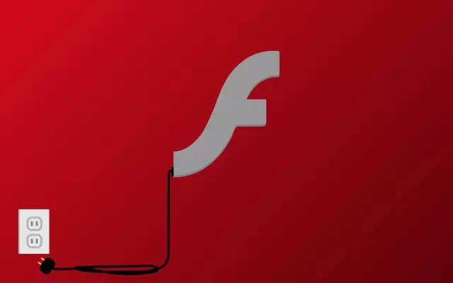
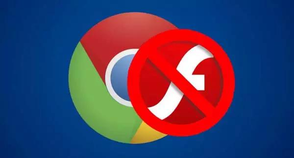
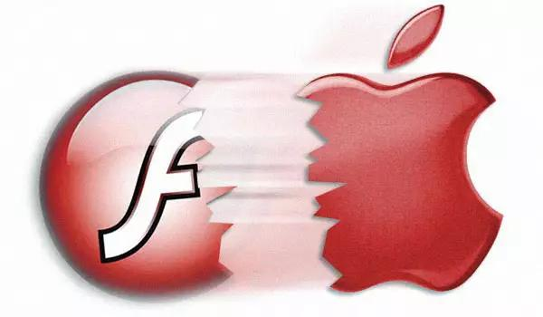
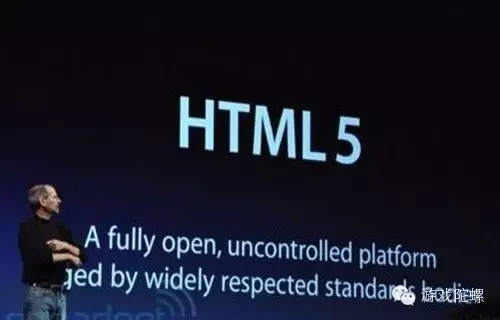
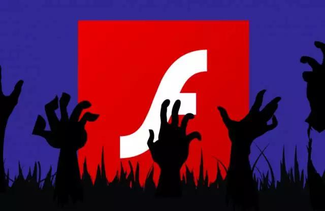

7 年前乔布斯说这项技术会死，如今预言已经成真了

Adobe 今天提示你更新 Flash 了吗？
这烦人的提示终于要成为历史了。在被「死亡」多次之后，Adobe 终于宣布 Flash 技术将在 2020 年年底正式退役。
Adobe 的合作伙伴苹果公司、微软、 Google 、Facebook 和 Firefox ，在未来三年时间里将分阶段停止为 Flash 提供技术支持。
在 2020 年过后，Adobe 将停止为 Flash 发布更新，网络浏览器将不再支持该技术。这些公司正在鼓励开发者为其软件改用现代编程标准。Adobe 的产品开发副总裁 表示：
随着 HTML5 等其他技术日渐成熟，足以成为 Flash 播放器的替代品，我们觉得是时候拔掉 Flash 的插头了。但在互联网时代，很少有 Flash 技术能产生如此深远而积极的影响。”
现在，几乎没有人愿意为 Flash 挽歌。没有了 Flash ，网络世界将更安全、更快速、更稳定，因此在这几年间浏览器和网站们都在翘首等待着 Flash 的死去。
“无情”的 Chrome
虽然 Google 此前在 Chrome 版本中一直集成了 Adobe Flash，但是其实它早就打算彻底放弃 Flash 了。
在 2015 年 9 月，Google 已经在 Chrome 上对 Flash 的自动播放功能进行了封杀，收效非常明显。用户的网页加载速度更快，设备也更加省电了。
而从去年 9 月开始，Chrome 先是对 Flash 在网页后台中的加载行为进行阻止，以便让网页加载更加顺畅。到了 12 月，新版的 Chrome 更是将网页默认支持选项转变为 HTML5。
失去了在桌面浏览器市场占据半壁江山（54.99％的市场份额）的 Chrome 的支持，也进一步加速了 Flash 的消亡。

按照 Google 的说法，目前 90% 的 Flash 网页都会在后台自动加载内容，这会拖慢网页的加载速度。

至于为什么会选择 HTML 5，Google 的解释是：
HTML5 更加轻便快捷。为了让网页加载更快，并且更加省电，许多网页开发者都转移到了这个平台。
乔布斯的公开信
实际上，除了 Google，已经有多个平台也都在进行从 Flash 到 HTML5 的迁移。其中最早的、也最决绝的，当属苹果。

搭载 iOS 的 iPhone 和 iPad 从一开始就拒绝了 Flash，这是乔布斯的决定。在当时 Flash 还在被广泛使用的情况下，这个决定给许多 iOS 用户带来了使用上的不便，但乔布斯依然坚持自我。
而在众多唱衰 Flash 的言论中，最著名的莫过于乔布斯的那封公开信了。2010 年 4 月，乔布斯罕见地发表了一封名为“Flash 之我见（Thoughts on Flash）”的长篇公开信，信中阐明了 Flash 的几点落后之处：
- 安全性差，被赛门铁克公司列为 2009 年最差安全记录之一；
- 稳定性不好，导致 Mac 电脑死机；
- 迟迟未推出移动版，导致手机等移动设备访问 Flash 视频网站时消耗了大量额外的电力；
- flash 主要的操作习惯均为鼠标定制，在多点触摸操作方式中，大量 Flash 网站需要重写。
对于这些问题，乔布斯总结说：
Flash 是个人计算机时代的产物，为个人计算机与鼠标准备。对于 Adobe 而言，Flash 是一门成功的生意，我们理解为什么他们要将它推广到其他领域。但是移动时代是低功耗、触屏界面与开放网络标准的时代，不管从哪个角度看， Flash 都有缺陷。
在公开信的结尾，乔布斯还推荐了 HTML5：
移动时代创造了 HTML5 等的开放新标准，它们将在移动设备（还有个人计算机）上获胜。也许未来 Adobe 应该将焦点更多的放在 HTML5 工具的开发上，而在苹果放弃过时东西的问题上少加批评。
其实当时 HTML5 的标准还没有正式确立，而且自身也有一些不完善之处，但乔布斯已经意识到了它的巨大潜力。

在后来的几年中，苹果的各项产品都在逐步减少对 Flash 的依赖。到了去年 6 月，苹果宣布将在全新的 Mac 系统内置的 Safari 浏览器中，默认禁止 Flash 插件的运行，以便运行更多的 HTML5 内容。
这一做法，与 Google 此前的做法如出一辙。
Flash 早就死了
正如乔布斯所说的那样，Flash 是 PC 时代的产物，它的确为 PC 时代的 Web 做出了很大贡献。Flash 一度是互联网行业的一项标准，它让程序员们不用在担心不同浏览器之间的兼容问题，这也让 Youtube 这样的视频网站和众多游戏的崛起奠定了基础。
但是到了移动互联网时代，Flash 的缺点愈加明显，最终不得不遭到各方抛弃。在 Adobe 2005 年收购 Flash 时，98 ％ 的个人电脑都运行着 Flash ，到了 2014 年也还有 80 ％ 的桌面用户在使用，而如今这一数字仅剩 17 ％。
与此同时，HTML5 的未来却越来越明朗。2014 年 10 月底，W3C（万维网联盟）宣布 HTML5 标准规范最终制定完成，HTML5 终于尘埃落定。
这对 Flash 而言，可以说是一个致命的打击。尤其是在接下来的 2015 年，Flash 可谓是“众叛亲离”，在各个网络平台的离去中，渐渐走向崩溃。
2015 年 1 月，YouTube 宣布废弃原有的 Adobe Flash 视频播放器，将 HTML5 视频作为 Chrome、IE、Safari 8 等主流浏览器的默认播放方式。
2015 年 2 月，Google 开始将旗下的广告自动由 Flash 版本转移到 HTML 5 版本。
从 2015 年 9月 1 日 开始，亚马逊公司旗下的所有广告将不再使用 Flash。
2015 年 12 月 22 日，Facebook 宣布自家网站的所有视频默认使用 HTML5 技术来播放，不再使用 Flash 技术。

在 HTML5 大局已定的情况下，似乎连 Adobe 自己也意识到 Flash 的凋谢已经无可挽回。HTML5 让网络上的视频和音频几乎可以像文本和图片一样比较容易地加载到网站中，这样的 Web 技术也加快了游戏和视频类应用的运行速度。
去年 12 月，Adobe 公司在官网发布文章，宣布将旗下的“Flash” 更名为 “Animate”。它还呼吁开发者放弃 Flash，转移到 HTML5 平台上来。
HTML5对最终用户的优势
大幅降低使用门槛
为什么流媒体会替代下载视频成为主流?为什么页游会如此火爆?只因用户太“懒”。让用户更方便的满足需求，有时效果好于满足更多的需求。
用户眼睛看到一个兴趣点，点击后，就应该立即开始满足用户需求。比如流媒体可以立即看，页游可以立即玩。而目前的原生应用市场，用户需要这样操作：选一个应用、等待下载、确认权限、等待安装，然后点击打开。这样糟糕的体验迟早要被颠覆。
不管是App、游戏还是音视频，未来都将即点即用。满足用户这个需求，就是发展的趋势。
实时更新、差量更新的优秀体验
HTML5应用可以绕开应用市场的限制进行自主实时更新，用户可以快速享受新服务。
而且这种更新完全可以是差量更新，比如某个HTML页面或某个js文件有问题，只更新这个几k的小文件就可以了，这比原生应用的更新体验好太多。
跨应用的使用体验
目前手机应用切换是以桌面或任务管理器为中心的，但事实上这些中心很影响效率和体验。用户想出差三亚，先打开去哪App订票，然后切回桌面，再找到并打开天气App，搜索输入三亚，再切到桌面，找到并打开航旅纵横App，输入航班号值机，哦对了，航班号多少来着，再切到桌面，找到并打开去哪App看航班号，最后找到并打开租车App，输入租车地点，然后再切回桌面。
在原生应用体系下，用户只能这样。但在HTML5体系下，他不需要切回桌面，他可以在App间方便的直接跳来跳去，而不是使用一个一个独立的App。他更不用重复录入数据，应用间可以方便的互相传递数据。
总结
互联网是一个快鱼吃慢鱼的时代，谁对用户的需求满足的更快，谁的试错成本更低，谁就拥有巨大的优势。互联网产品大多免费、且有网络效应，后入者抢夺用户的难度非常大。所以，互联网快速迭代，谁能挖掘用户需求，迅速满足需求，才能制胜。